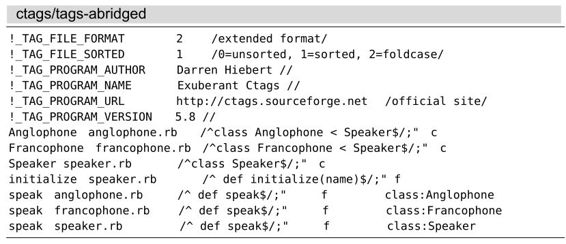

技巧101结识ctags
为了能够使用Vim的标签跳转功能，首先，必须安装ctags程序，然后，掌握其执行方法，最后，再深入了解由它产生的索引内容。
安装Exuberant Ctags
Linux用户应该可以通过包管理器获取到ctags程序。例如，在Ubuntu上，你就可以通过以下命令安装该程序：
➾$ sudo apt-get install exuberant-ctags
OS X的发行版也预装了一套名为ctags的BSD软件。
注意：此程序并非Exuberant Ctags。你还需自行安装真正的Exuberant Ctags。当然，使用homebrew程序可以让安装过程变得更容易一些：
➾$ brew install ctags
以下命令可以检测出系统是否安装了ctags以及路径正确与否：
➾$ ctags --help
《 Exuberant Ctags 5.8, Copyright (C) 1996-2009 Darren Hiebert
Compiled: Dec 18 2010, 22:44:26
如果你没有看到以上信息，就意味着要对 $PATH进行修改，即确保/usr/local/bin比/usr/bin优先。
ctags的其他补充
Mozilla基金会资助着一个名为Doctor JS(1)的项目，而jsctags是它旗下的一个应用程序。此程序凭借对JavaScript语义的深入理解，实现了针对JavaScript代码的静态分析功能（jsctags本身就是由JavaScript实现的）。用jsctags生成的文件与ctags输出的文件格式一致，因此，该程序可以做到与Vim无缝对接。
标签文件的格式并非秘而不宣，它本身就是一个纯文本文件。任何人都能通过编写脚本，生成可被Vim识别的标签文件。
用ctags创建代码库的索引
我们可以在系统命令行中调用ctags，以要建立索引的文件路径作为它的参数，既可以是一个文件，也可以是多个文件。随书附带的源代码收录了一组由3个Ruby文件组成的小演示程序。让我们先在这组代码库中运行ctags：
➾ $ cd code/ctags
➾ $ ls
《 anglophone.rb francophone.rb speaker.rb
➾ $ ctags *.rb
➾ $ ls
《 anglophone.rb francophone.rb speaker.rb tags
注意：ctags创建了一个名为tags的纯文本文件，其内容是ctags经过对3个源文件的分析而生成的关键字索引。
详解标签文件
让我们对刚生成的标签文件做一番深入研究。出于版面的限制，个别文本行已做了适当的调整。

标签文件的前几行由元数据组成。而此后的每一行文本均由关键字、文件名以及关键字在源代码中的位置这3项内容构成。另外，由于关键字是按照字母顺序排列的，因此，Vim（或者其他文本编辑器）可以采用折半查找法快速地定位到某个关键字。
用模式定位关键字，而不是用行号
描述标签文件格式的规格文档明确指出，关键字的地址可以是任意的Ex命令(2)。虽然使用绝对行号是选择之一，例如，通过Ex命令:42，我们就可以将光标移至第42行上，但想想这种方法有多么脆弱，哪怕只在文件的开头新加入一行文本，都有可能造成所有关键字位置的错位。
ctags不采用绝对行号，而是用查找命令定位每一处关键字（如果你不相信查找命令是一种Ex命令，请试着输入:/pattern）。相比使用行号而言，此法更为健壮，但依然不算完美。试想一下，如果在给定的文件中，用于定位关键字的查找命令有不止一处匹配，那该怎么办？
这种事情应该不会发生，因为如果有必要的话，模式可以匹配连续多行文本，直到可以唯一定位这个关键字为止。另外，只要标签文件每一行的长度不超过512个字符，它就可以向后兼容vi。当然，当查找模式变得更长了，它自身也会变得脆弱。
用元数据标记关键字
传统的标签文件格式只需由制表符分隔的3组字段构成：关键字、文件名以及定位符。但目前使用的扩展格式，允许在末尾添加额外字段，为关键字提供元数据。在本例中，我们可以看到Anglophone、Francophone以及Speaker这3个关键字都被冠以c标签，用来表示“类”，而initialize与speak则被标记为f，以此代表“函数”。